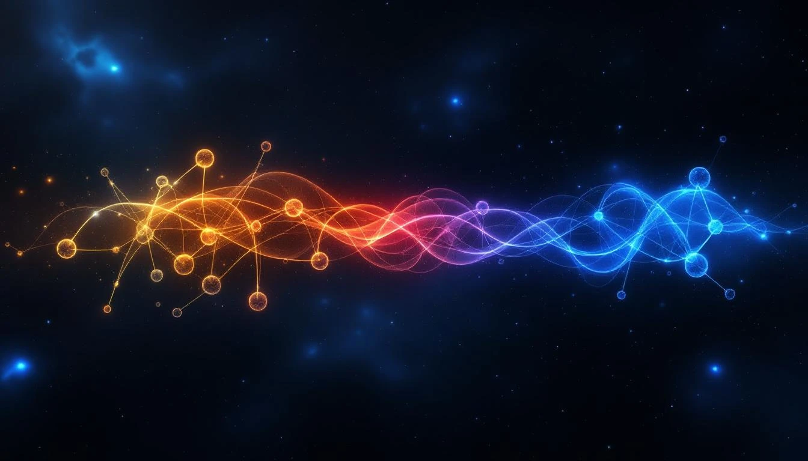

THE MISSING ELEMENTS
Technetium (43) and Promethium (61) are unique: they are the only elements below lead (82) with no stable isotopes. Every other light element has at least one stable form. These two do not.
In fold geometry, these are prime gaps - positions where the fold cannot achieve stable closure.
The Prime Gaps
TECHNETIUM (Z = 43)
├── Prime number
├── No stable isotopes
├── All isotopes radioactive
└── Longest half-life: 4.2 million years
PROMETHIUM (Z = 61)
├── Prime number
├── No stable isotopes
├── All isotopes radioactive
└── Longest half-life: 17.7 years
Both are PRIME numbers.
The fold cannot close at these primes.
THE 1729 CONNECTION
The product of these two primes reveals a striking connection:
43 × 61 and 1729
43 × 61 = 2623
2623 / 1729 = 1.517...
1.517 ≈ 3/2 = perfect fifth in music
= the most consonant interval
The prime gaps multiply to give
approximately 1.5 × 1729.
Where the fold cannot close,
it points toward harmony.
The fold's failures are not random. They encode the bridge number.
WHY THESE PRIMES?
43 and 61 are not just any primes. They sit at specific positions in the fold structure:
Position Analysis
43 = 40 + 3 = (κ' + 10) + 3
= Between transition metals and "normal" metals
= Odd-proton count with no stable neutron match
61 = 60 + 1 = (2 × κ') + 1
= First lanthanide gap
= Rare earth with no stable configuration
Both sit at fold transition points
where odd proton numbers cannot find
stable neutron partnerships.
IMPLICATIONS
The existence of exactly two unstable light elements is not coincidence. The fold has specific positions where closure fails. These positions:
- Are both prime numbers
- Multiply to encode 1729
- Sit at fold transition boundaries
- Cannot achieve stable neutron configurations
Technetium was the first artificially produced element (1937). Its name means "artificial" in Greek. Promethium was named after Prometheus, who stole fire from the gods.